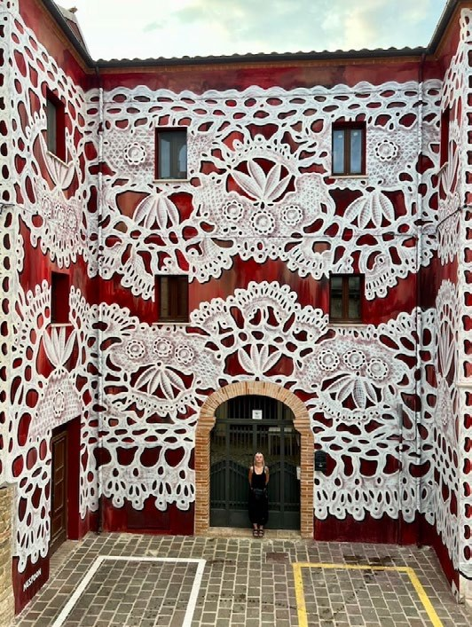
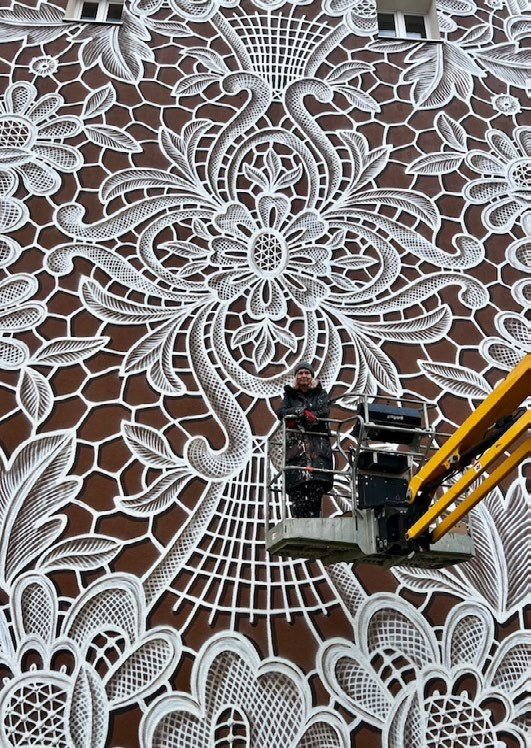
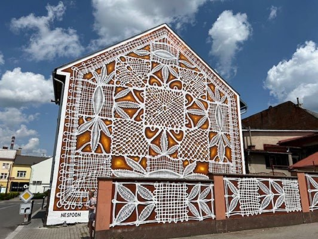
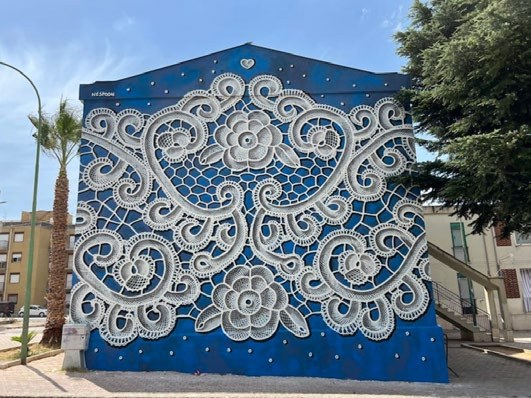
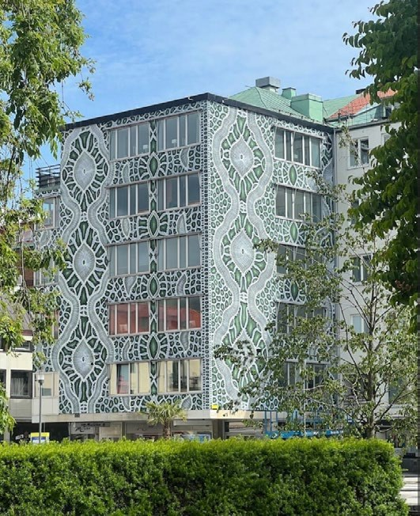
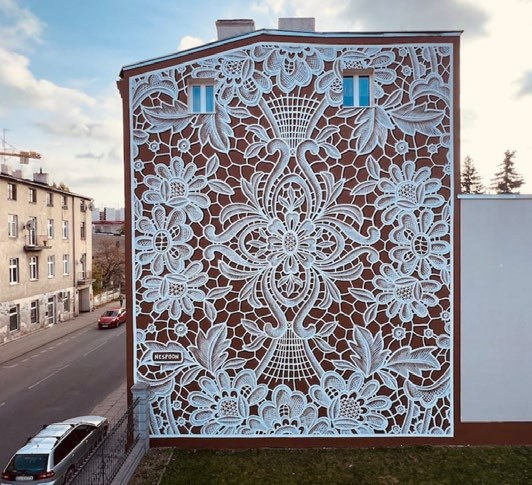

El arte de la calle se alimenta de la contradicción. Toma lo temporal y lo planta firmemente en superficies permanentes. Toma prestado de la energía cruda del graffiti a veces produciendo obras que compiten con las instalaciones de los museos en precisión. Pocos artistas presentan esa contradicción más elegantemente que NeSpoon, cuyos murales traducen una de las más delicadas artesanías en la historia —el encaje— en composiciones arquitectónicas de gran tamaño que envuelven paredes de la ciudad y fachadas históricas.
A primera vista, la idea parece casi caprichosa: patrones de encaje, de la clase que usualmente adorna vestidos antiguos o textiles heredados, reproducidos a una escala lo suficientemente grande para arropar edificios de apartamentos. Y sin embargo, esa sencillez del concepto es precisamente lo que hace que el trabajo de NeSpoon sea tan interesante.

Sus murales ocupan un espacio poco usual entre artesanía de pueblo y arte contemporáneo urbano, simultáneamente referenciando tradiciones textiles centenarias, a la vez que transforma el carácter visual de la ciudad moderna. A través de Europa y más allá, NeSpoon se ha dado a conocer por murales que abarcan edificios residenciales, esquinas de puentes y estructuras históricas. Los intricados patrones parecen imposibles de precisar desde una distancia. De cerca, sin embargo, la mano de la artista se hace visible en líneas hechas con aerosol y pinceladas que revelan la labor tras la ilusión.
El resultado es una forma de arte público que se siente ornamental y monumental a la vez —algo raro en el mundo del arte que prefiere a menudo la ambigüedad conceptual sobre la belleza visual.
La larga historia del encaje como artefacto cultural
Comprender el trabajo de NeSpoon requiere entrar brevemente en la historia del encaje en sí. Aunque a veces parece como una curiosidad hoy en día, el encaje ocupó una vez un sitio importante dentro de la vida cultural y económica de Europa. Los historiadores generalmente trazan el origen del encaje desde el principio del siglo XVI, con Venecia como uno de los centros de la artesanía. Durante el Renacimiento, el encaje pronto se convirtió en símbolo de solvencia y estatus. Cuellos elaborados, puños y bordes decorativos aparecían en el guardarropa de aristócratas y comerciantes que podían pagar el proceso de intensa labor requerido para producirlos.
La artesanía evolucionó en dos vertientes técnicas. El encaje de bolillos, quizás la forma más reconocible visualmente, envuelve hilos enrollados alrededor de pequeños bolillos que se tuercen y se trenzan sobre una almohadilla con un patrón —lo que nosotros conocemos como mundillo. El encaje de aguja, por contraste, evoluciona de las tradiciones del tejido y depende de intricados bucles hilvanados para construir una estructura tejida, hilo por hilo. Ambos métodos requieren extraordinaria paciencia y destreza.
En muchas regiones, hacer encajes se convirtió en una artesanía comunal pasada de generación en generación, imbuida de las tradiciones locales e identidad regional. El trabajo de NeSpoon se alimenta directamente de estas fuentes históricas. Muchos de los patrones de sus murales se derivan de motivos de encaje tradicionales de regiones específicas. Agrandándolos hasta hacerlos del tamaño de un edificio, efectivamente transforma lo que antes era una artesanía íntima y doméstica en una forma de diseño público monumental.

Traduciendo artesanía a arquitectura urbana
Lo que distingue a NeSpoon de muchos otros artistas callejeros es su cuidadosa relación con la arquitectura. Más que usar los edificios como soportes neutrales, usa las características estructurales como parte de la composición. Ventanas, aleros y cornisas se convierten en elementos que enmarcan los patrones de encaje. Los murales a menudo parecen enfundar las estructuras como si los edificios estuvieran ellos mismos, envueltos en la ornamentación textil. Este acercamiento convierte complejos residenciales ordinarios en algo semejante a instalaciones arquitectónicas.
La escala de estas obras crea una experiencia visual fascinante. Desde la calle de enfrente o una plaza, los murales parecen casi mecánicamente perfectos. La simetría y repetición los asemejan a diseños impresos en una tela ampliados cientos de veces. Pero la proximidad revela el elemento humano. Los bordes precisos se disuelven con la marca del aerosol y las pinceladas que exponen el proceso manual detrás del trabajo.
Ese desplazamiento —de la perfección visual a la imperfección táctil— es un eco de la esencia de la manufactura de encaje tradicional, donde horas de labor a mano producen patrones que parecen imposiblemente perfectos.
El encuentro de la tradición con lo contemporáneo
El acercamiento de NeSpoon también refleja un cambio cultural amplio que está ocurriendo dentro del diseño contemporáneo y el arte. Por la pasada década, las prácticas artesanales tradicionales han reclamado la atención de los artistas que están buscando alternativas a la producción puramente digital. Las tradiciones textiles, la cerámica y el tallado de madera a mano se han incorporado a la conversación dentro de los espacios de arte contemporáneos. El atractivo se debe en parte a su resistencia a la producción en masa.
Haciendo referencia al encaje, NeSpoon se une a ese renacimiento de la artesanía presentándolo dentro del lenguaje visual del arte de la calle. El resultado une dos mundos que rara vez se intersecan: la paciencia íntima del trabajo textil y la inmediatez pública de la pintura mural. Lo doméstico se torna monumental. Algo tradicionalmente delicado se manifiesta de pronto sobre superficies urbanas masivas.



Murales que viajan por el mundo
El trabajo de NeSpoon se ha visto en ciudades en Europa, Asia y las Américas, a menudo como parte de festivales de arte callejero o programas de murales públicos. Estos eventos invitan a los artistas a transformar temporeramente vecindarios con obras a gran escala, convirtiendo distritos completos en galerías al aire libre. Aunque los escenarios varían —de bloque de apartamentos residenciales a centros— el lenguaje visual permanece consistente. Patrones de encaje aparecen enmarcados por rasgos arquitectónicos, a veces expandiéndose a través de varios edificios conectados para crear composiciones contínuas.

Este año continúa esa trayectoria global. En mayo, NeSpoon viajará a Valence, Francia, donde planea transformar varias estructuras conectadas a través de tres cuadras de la ciudad. La escala del proyecto promete ser una de sus más extensas instalaciones, tejiendo patrones de encaje a través de un paisaje urbano que típicamente depende de fachadas de piedra y arquitectura europea tradicional.
Proyectos como este demuestran la poco usual versatilidad de su estilo. Patrones de encaje, aunque enraizados históricamente en regiones específicas, poseen un lenguaje decorativo universal. Su ritmo geométrico les permite adaptarse fácilmente a distintos estilos arquitectónicos, desde edificios modernos de concreto a mampostería de siglos.
El callado poder del ornamento
En el ambiente del arte contemporáneo a menudo dominado por la provocación conceptual, los murales de NeSpoon ofrecen algo refrescantemente directo: ornamentación que invita al espectador a mirar más de cerca. Su trabajo no depende de gestos visuales agresivos o exagerados mensajes políticos. En vez de ello usa patrones, simetría y referencia histórica para transformar espacios urbanos cotidianos.
Hay una callada subversión en ese acercamiento. El ornamento, descartado por la arquitectura modernista como decoración innecesaria, regresa en los murales de NeSpoon como algo lo suficientemente poderoso como para transformar edificios completos. Los encajes sugieren fragilidad, pero ocupan una escala inmensa. Referencian la artesanía doméstica pero a la vez comandan la atención del público. Y muy calladamente le recuerda a los espectadores que la belleza —especialmente la que está asociada con la artesanía— puede todavía jugar un papel importante en el entorno urbano contemporáneo.